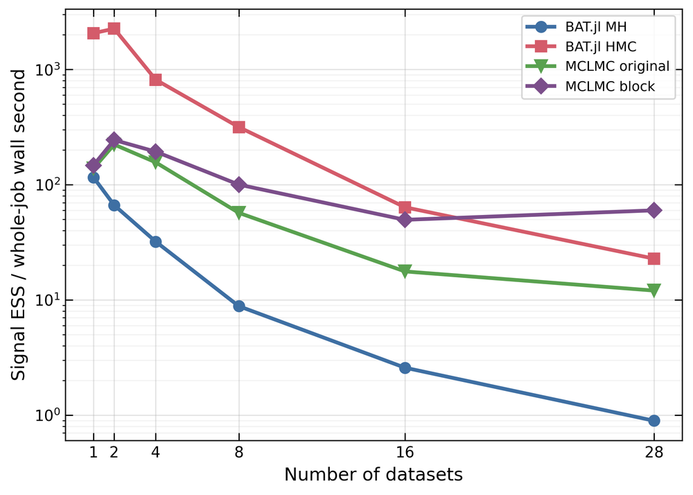

Scalable Bayesian Inference for Experiments
Why is the universe made of matter instead of antimatter?
CUORE and CUPID search for neutrinoless double beta decay, a process that would show nature doesn't conserve lepton number, a key ingredient in leading explanations for why matter won out over antimatter. Finding that signal means sampling a posterior with over a hundred parameters across dozens of datasets, and standard samplers slow down sharply as data grows. My exact block gradient method exploits the likelihood's structure so the cost grows linearly rather than quadratically with the number of datasets.

The block gradient MCLMC sampler showed the best scaling of all samplers tested.